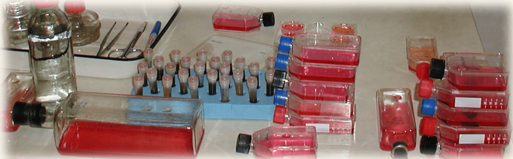

Androgen Research Group
prostatitis treatment
Prostatitis usually goes into a chronic form which is accompanied by pain and suffering for many years . Most important will be to determine the pathogen where exactly the reason of inflammation and irritation in prostate is. After the detailed diagnostic and isolation pathogens, treatment is then continued. The scientific article describes in detail the diagnosis and treatment:
"Specific Immune Protection to Klebsiella pneumoniae and Enterococcus faecalis in the Chronic Prostatitis Sufferers."
The treatment technology includes the preparation of a highly immunogenic conjugate. This speciffically increases in body high level and titre of antibodies and these antibodies fight the cause of inflammation.
As a result, the bacteria caused inflammation of the prostate gland leaves the prostate after a while. In most patients with prostatitis, after such treatment, there is no attack in the prostate by bacteria.
Download more detailed article

Our Mission:
The prostatitis syndrome is not a figment of your imagination as insurance companies and many ignorant practitioners would like you to believe. For every effect there is an exact cause!
Despite what people tell you, there is a damn good reason why 40% of all prostatitis cases are not resolved with antibiotics alone. When this cause remains hidden, the wrong treatment needlessly perpetuates suffering for decades if not the rest of people's lives. If you are reading this address you already realize chronic infection will not just go away on its own or through the use of some antibiotic cure all.
When patients don't respond to antibiotics there is always a reason why. The prostatitis syndrome is caused by various bacteria, funguses, and viruses, as well as, mixed infections. Antibiotics can't suppress the plunder of a viral or or fungal infection, likewise, they are virtually useless on severely resistant bacteria.
Here at "Androgen" there is no guess work, we use only the best diagnostics available to find the precise cause of suffering. Isolation of the exact pathogens proves every diagnosis we make. "Androgen" uses all available technology to try to cure every patient we treat. All our time and energy centers around this single task. We develop and improve new treatment technologies for chronic prostatitis and seminal vesiculitis, using the most advanced technology available. "Androgen" is not financed by the state or other institutions, therefore we can not provide our services free of free-of-charge. Many patients want to receive our treatment, without having the necessary funds. Unfortunately, we can not accept these patients because the use of the latest technologies is prohibitively expensive.
Our new technologies make use of expensive chemical reagents and nutrient media made in USA (by Sigma and Becton Dickinson), for the production of high-immunogen conjugates that are suited only for the patient it is produced for. It is the cost of these raw materials that make up the majority of the cost of treatment. We have no control over these costs since they are dictated to us by Sigma and Becton Dickinson. We provide these chemical reagents and medias to you at our cost; you can verify this fact independently. Each conjugate produced is unique to all others based on the specific (isolated from each patient) bacteria, fungus, or virus it is intended to treat. This reality makes high immunogen conjugates impossible to mass produce, and so, the lack of economies of scale make the production of each conjugate extremely expensive.
Please contact us with any questions or problems at the following E-mail address: vogadro2007@gmail.com
A Brief Summary of Androgen Scientific Research
Group activity:
The Androgen Scientific Research Groupwas created in 1990 with the purpose of rendering assistance to men suffering chronic inflammatory processes in their reproductive sexual glands: prostate and/ or seminal vesicles
Dr. Vasily Bairaktar, Doctor of Medical Science at Odessa University, leads the scientific and clinical direction of the group. Dr. Bairaktar with his colleagues concentrate on detailed diagnosis of prostatitis, as well as, the use of new, modern, highly effective technologies in treatment for patients suffering chronic inflammation in the prostate gland and seminal vesicles.
The Group "Androgen" consists of the top specialists of the major medical schools of the city of Odessa. The following specialties are represented in the Group: Immunologists, microbiologists, virologists, mycologists, experts in ultrasonic diagnostics, experts in clinical and biochemical laboratory diagnostics, urologists, endocrinologists. The powerful combination of such medical specialties helps the group achieve success where doctors with single specialties are have failed.
The tasks of the Scientific Research Group- "Androgen": Activities of the group:
- Diagnose the latent inflammatory processes in the prostate and seminal vesicles.
- Detailed diagnostics: isolation of the specific infective agent in prostatitis or seminal vesiculitis (bacterium, viruses or fungi)
- Define the type and form of the infective agent in prostatitis or seminal vesiculitis.
- Define the condition of the cellular and humoral immunity link of patients.
- Structural examine the morphological features of the prostate using ultrasonic diagnostics.
- Preparation of high immunogen conjugates from viral, bacterial and fungal agents in the prostate or seminal vesicles. Each conjugate is custom-made for each patient.
- Treatment with high immunogen conjugates while thoroughly monitoring the immunological reactions of the patient.
Methods of assessment and diagnosis of
inflammation in the prostate and seminal vesicles.
Detailed diagnosis of the inflammatory processes of the prostate and seminal vesicles.
- Bacteriological and mycological diagnosis with the use of selective nutrient media intended for the selection of bacteria in semen from subjects suffering from prostatitis and seminal vesiculitis.
- Diagnosis of Trichomonosis using selective nutrient media in cultures.
- Virological diagnosis using nutrient media intended for selection of the viruses from semen of subjects suffering prostatitis and seminal vesiculitis.
- Isolation of Herpes Simplex Virus, Papilloma viruses, Adeno viruses, Entero viruses and other viruses and Chlamydias, from secretions of men's reproductive sexual glands (semen) grown on special cell line cultures. (Note: Serological virology methods fail to isolate the live viruses 75% of the time, and therefore it is essential to uses special cell lines.)
- Immunofluorescent analysis with specific Chlamydias, Herpes Simplex Virus, Mycoplasma, Ureaplasma and other virose-bacterial antibodies for the presence of Chlamydias, Herpes Simplex Virus and other virose-bacterial antigens in semen of men.
- PCR (serological reaction) diagnostic.
- Immunofermentation analysis of blood for presence of antibodies and definition of their titer to:
Titer of antibody in blood to some viral, bacterial, fungal infection:
- Cytomegalovirus;
- Herpes virus type-6;
- Herpes simplex virus type 1 and 2;
- Epstein-Barr virus;
- Adeno viruses;
- Papilloma virus;
- Papova viruses;
- Chlamydia trachomatis; pneumoniae;
- Mycoplasma hominis;
- Ureaplasma urealiticum;
- Toxoplasma gondii;
- Trichomonas vaginalis.
- When it is necessary we perform a subcutaneous test with chlamydial antigens to detect the presence of a chlamydial infection.
Traditional Methods of treatment of Prostatitis and
Seminal vesiculitis are grossly inadequate
Traditional methods of treatment of inflammatory processes in the prostate and seminal vesicles by antibiotics are still widely used. Treatment by antibiotics is only justified in acute cases, where it is a matter of life or death.
The repeated use of antibiotics for a chronic inflammatory process in the prostate and seminal vesicles destroys beneficial bacteria such as Bifidumbacterium, Escherichia coli, Lactobacillus in the intestines, and so, frequently causes disbacteriosis in the intestines.
In disbacteriosis the balance of bacterial types in the patient is broken, and so, beneficial bacteria perish. In their place pathogenic bacteria and viruses take hold. Over the years parasites populate the intestines and other parts of the body rendering a negative influence on many of the patient's normal systems. This cycle can go on for decades without amelioration.
This has become our working concept. It is confirmed by our research and the research of our colleagues. Typically chronic prostatitis and seminal vesiculitis is treated by using several courses of antibiotics like: Cipro, Ciprolet, Ciprobid, Ciprobay (Cyprofloxacin), Cefobid, Ofloxacin (Tarivid), Trovan, Norfloxacin, and other types of antibiotics like Metronidazole (Flagyl, Tinidazol) are also widely used. The Bacteria have the ability to form a resistance - "to get used" to the repeated actions of antibiotics, therefore frequent use reduces the therapeutic effect to zero. Our research has shown that the use of antibiotics drastically hinders the function of the liver, kidneys, blood and most importantly suppresses the protective functions of the immune system.
We have found it possible to avoid the application of antibiotics all together for our treatment of chronic prostatitis and chronic vesiculitis. The use of antibiotics for chronic inflammatory processes does not eradicate pathogenic bacteria in a patient. Antibiotics only delay the duplication and growth of bacteria, and so, do not provide a permanent solution. Once antibiotics are stopped the same bacteria again multiply in the patient's body and cause a relapse of prostatitis and vesiculitis. For this reason, antibiotics are prescribed over and over again over many years and still do not solve the problem. It is important to note that antibiotics do not influence viruses at all. You can take antibiotics for the rest of your life, but it will do you no good if your symptoms are caused by a virus.
During treatment of chronic prostatitis and vesiculitis we use physiotherapeutic procedures as an auxiliary factor to increase the effectiveness of our treatments.
We have included a combination of physiotherapeutic procedures and use these if necessary:
1) Rectal ultrasonic medical procedures on the areas of prostate and seminal vesicles is useful in reducing calcification in prostate and normalizing the overall structure.
2) Weak medical infrared laser over the lower abdomen. It helps stimulate the immunoprotective functions and suppress pathogens.
3) Medical amplitude impulses (stimulating therapy). Suppress inflammation, reduce pain and normalize nervous system function in pelvic area.
4) Medical electrophoresis (iongalvanization). This procedure allows the diffusion of certain substances in the body (e.g. ZnSO4 (restores nervous system function in pelvic area), KI (anti-inflammatory), Novocain, etc.) through the lower abdomen and lower back with the aid of a static electric field.
The use of such physiotherapeutic procedures is necessary especially when there are inflammatory stones in the prostate, and also:
1) Helps the infiltration of the prostatic capsule (electrophoresis),
2) When the prostatic tissue is not homogeneous,
3) When there is calcification in the prostate. (Note: After many years of a chronic infection without proper treatment the tissue of the prostate changes. The tissue no longer properly secretes necessary fluid.)
The use of the physiotherapeutic procedures helps us to restore the morphological structures of the prostate. As a result, the reduced secretory function is restored to the prostate and seminal vesicles.
New concepts and technology for treatment of
prostatitis and seminal vesiculitis in young men:
Our new technological treatment of prostatitis and seminal vesiculitis is based on the fundamental understanding of clinical immunology. High immunogen conjugates, made by the Androgen Scientific Research Group- are used to influence the action on specific pathogens involved in prostatitis and seminal vesiculitis this stimulates the specific immune response of the patient. In the process, pathogenic agents of prostatitis and seminal vesiculitis are eradicated.
The use of high immunogen conjugates facilitate the stabilization of normal microflora in the inflamed area. This provides the patient a long period of resistance to microorganisms for which we have provided immune protection. Our use of high immunogen conjugates against agents in prostatitis and vesiculitis represents a new and highly effective method of treatment that is far superior to antibiotics. We carry out detailed virological, bacteriological and mycological (fungal) diagnostics on semen to identify the types of bacteria, fungi or viruses responsible for the infection. There is no guess work involved in our diagnostic methods, all treatments are based on the isolation of specific pathogens. We extract, select, and isolate the infective agent from semen, urine, and EPS (Express Prostatic Secretions). After we have selected pathogenic bacteria, fungi or viruses alive we prepare high immunogen conjugates from these isolated microorganisms for each patient.
The technological process of preparation of high immunogen conjugates depends upon the type of infection for the specific patient. This process takes time approximately as follows:
- For bacteria - up to 1 month;
- For fungi: 1-2 month (It depends on the kind of fungus);
- For viruses: 2-3 months (It depends on the kind of viruses).
Before beginning treatment we do a detailed assessment of all aspects of the patient's immune system. We carefully estimate the condition of the immune system by checking the cell and humoral immunity that indicates natural resistance. Taking into account specific immunological problems, we choose the appropriate type of immunological correction. If a patient has autoimmune diseases or if the patient is sensitive to the tested bacterial, viral and fungal antigens, we carry out desensitization with specific antigens.
Only after desensitization do we begin generating active specific immunity for the microorganisms involved in the patient's disease.
We begin manufacture of the high immunogen conjugates only after the patient pays the cost of Chemical Reagents and Nutrient Media for bacterial, fungal or viruses cultures. The reagents and medias are an indispensable part of generating high immunogen conjugates. The course of treatment consists of 3 intramuscular injections with an interval of 10 days between injections.
Contra-indications for use of our high immunogen conjugates are allergies or predisposition to allergic diseases.
Our treatment is highly individualized and entails significant labor cost in the preparation of immunogen conjugates. The material cost for the reagents used in the preparations of the conjugates are also very expensive.
As a result, we can only treat a small number of patients. Typically, a patient stays for three weeks, and in this period he is the only patient treated. This allows us to monitor each patient's progress on a continuous basis so we can direct all our efforts on curing him. The nature and method of our treatment involves significant cost, and therefore, is addressed only to persons with the necessary financial means. The cost of manufacture of high immunogen conjugates directly depends on the types of microorganisms isolated from the individual patient during detailed diagnostics. It is calculated in each specific case individually.
Our methods can resolve the problems of individuals who have been unsuccessfully treated for prostatitis and seminal vesiculitis, because our treatments overcome the problem of antibiotic resistance and serve to effectively eradicate viral causes that thus far have not been treated.
Our conceptual approach to the treatment of recurring prostatitis
due to viral, bacterial or fungal infections.
Our new concept has been carefully refined and tested for over ten years.:
Our new conceptual approach focuses on the treatment of chronic prostatic infection by viral, bacterial or fungal pathogens without the use of antibiotics.
Our purpose: Forming specific immunity protection to the chronic relapse of prostatitis caused by viral, bacterial or fungal infections based on individual immunoreactivity of CP sufferers.
To achieve our purpose we perform the following tasks:
- Check the status of cellular and humoral immunity in general. Identify any allergic sensitization to specific viruses-bacteria-fungi to antigens. Determine status of cells that determine natural resistance of the body (by measuring cell toxicity from activity of " killer cells (CD+25) and functional status of macrophages (mononuclear cells and phagocytes)).
- From the analysis of the immune status of the patient we can determine the required immunocorrective therapy. We use medicines which primarily influence the T cell (CD3+) immunity link, humoral immunity, and natural resistance.
- If the patient is allergic (highly sensitive) to viral, bacterial or fungal infective agents we follow a specific desensitization therapy as a first step, prior to the onset of conjugate therapy.
- After immune tests we can determine if the systemic patient immunity is satisfactory, we proceed with specific immune therapy employing specific viral, bacterial or fungal high immunogen conjugates once we deem the function of the immune system to be normal. These conjugates generate significant amounts of antibodies, specific to the isolated pathogen.
- Taking into account the initial level of immune status of the patient we make individual selection of dosage of high immunogen conjugate (by checking the reaction of CD-3 (T-cells) and other effectors for viral, bacterial or fungal high immunogen conjugates).
- In some cases, when we can not receive the necessary level of desensitization and immune correction (by a series of antigen shots) we use a combination of low doses of high immunogen conjugates, and immune modulators (alpha - 2 recombinant interferon etc.). The result is an increase in the receptor cells that help to reduce inflammation, while generating sufficient number of antibodies to fight the pathogens.
- We perform an immune reaction control test to monitor the status of the patient's body and determine the rate of the subsequent introduction of viral, bacterial or fungal immunogen conjugates.
- We administer physio-therapeutical procedures before and after specific immune therapy.
Antibiotic treatments are often marked with relapsed bacterial, fungal and/or viral infections. Furthermore, the traditional methods of treatment with antibiotics often lead to undesirable complications (disbacteriosis in intestines, allergic reactions in the body, decrease of activity immune status in patient body etc.). Our approach, on the other hand relies on employing the body's own healing powers for the treatment of microbial infections. Our new conceptual approach involves the creation of an individual system of natural protection against viruses, bacteria, and fungi with the formation of specific antibodies without antibiotics or toxic anti-viral medications. (e.g. acyclovir, famvir, zovirax, etc.)
Detailed virological diagnosis for CP sufferers.
Over the years, we have had a lot of correspondence with CP sufferers from various countries, who all agree that the use of antibiotics has not resulted in any lasting improvement of prostatitis symptoms. When antibiotics fail, it is necessary for experts to look for a viral or fungal infections in the prostate or seminal vesicles. The use of antibiotics disturb or even eradicate the intestinal flora that play an essential role in the metabolism of the body and thus has a detrimental effect on the immune system's balance. Pathogenic fungal overgrowth often replaces the compromised or eradicated beneficial bacterial flora. At other times, pathogenic overgrowth of bacteria or viruses dominates and a mixed bacterial-viral infection can ensue. In such cases we perform detailed virological tests that require special nutrient media, special cell lines, special laboratory utensils and sets of reagents. These materials are very expensive but are essential for the accurate diagnosis and subsequent treatment of CP sufferers. We currently import the necessary equipment for detailed virological diagnostic reagents from the USA (Sigma Chemical Company) and other US companies, unfortunately their prices are very expensive and constantly continue to increase.
So, for example, receiving only one special cell line culture from the European cell line bank (Great Britain) cost - 450 pounds, if 6 lines are necessary for the tests, it accordingly will make - 2700 pounds or ~ 4000$USA. These costs are significant, and so, not every patient can afford it.
Virological tests are not covered by the insurance plans of the patient living in the US and other countries, because of their significant cost (Approximate cost of a set of complex virological tests including all necessary reagents for one patient can reach eight thousand US dollars and sometimes exceed that amount.) The majority of CP sufferers are not capable to pay for such modern diagnostics, therefore the cause of their suffering remains hidden. Absent diagnostics leads to the wrong diagnosis and treatment, and so, the problem of chronic prostatitis is perpetuated for many decades. The bulk of the cost of treatment is put towards purchasing the necessary reagents, nutrient media, and laboratory utensils for diagnostics and the production of conjugates. These reagents and medias will be provided to you at our cost. These prices are dictated by the manufacturers of the necessary reagents and medias and can be verified independently.
The proposal of Androgen Scientific Group
The Androgen Scientific Research Group
Androgenprovides diagnostics and treatment of inflammatory diseases of male reproductive glands (prostate, semen vesiculitis), and also their consequences:
Accelerated ejaculation;
Impotence;
Infertility.
The group offers help to men 18 to 45 who require diagnostics & treatment of prostate illnesses and diseases of seminal vesicles which do not yield to treatment by classical methods. After all, chronic infections caused by Chlamydia; Mycoplasma, Ureaplasma, fungi are almost impossible to cure with antibiotics alone. Likewise, antibiotics provide no theraputic effect at all for infections caused by viruses.
AndrogenOffers: Initial diagnosis & treatment for the inflammatory process in men's sexual glands.
Androgenreminds: 70% of men under 40 have latent inflammation of reproductive sexual glands. To avoid dangerous consequences later on in life (tumors, adenoma, and cancer of the sexual glands), young men should remain vigilant and take expert advice.
Androgenoffers: The author's original treatment of prostate gland and seminal vesicle inflammation. We have good practical results from the introduction of new technologies in the treatment of these inflammatory diseases. Cost of preparation will depend on the particular microbes diagnosed. The treatment consists of 3 intramuscular injection once every 10 days, and one additional intramuscular injection a year later.
Contra - indication is allergic reactions.
We will be glad to render this effective help to sufferers of chronic prostatitis at cost price (Chemical Reagents and nutrient media). The remedy is efficient for men aged between
18 and 50, before the onset of any tumors or other dysplasias. Anonymity is guaranteed.
Please contact us in case of any question, problem, or proposal. Dr Vasily Bairaktar E-mail address: vogadro@gmail.com
Treatment for men who are infertile because of
low quantity of semen and/ or low motility
A significant percent of infertility in married couples is caused by immunological factors such as incompatibility and autoagression to spermatozoids in the cervix from slime originating from wife's uterus. Infertility is often caused by weak motility of spermatozoids at normal quantity or caused by low number of spermatozoids. We overcome this problem through the artificial fertilisation of the wives by stimulating spermatozoa of the husband who suffers from chronic prostatitis in stage of remission. We have developed and successfully tested new technologies allowing us to overcome this barrier.
All information is strictly confidential.
Indicated for artificial fertilization of wives:
- Low parameters of fertility of the husband because of problems arising from chronic prostatitis.
- Normal parameters of fertility, but with immunological incompatibility and autoagression of slime at the cervix of uterus, when fertilizations of spermatozoids does not occur.
Obligatory diagnostic tests:
The following tests are necessary for the women:
- Concentration of sexual hormones in blood: (in period of follicular phase) LH; FSH; Prolactin; Estradiol; Progesterone; Testosterone; Cortisol; IgE
- Results of ultrasound tests for uterus, fallopian tubes, and ovaries.
- Hysterosalpingographia (x-ray photo) if it is necessary. This artificial fertilisation technique works even in cases of only one free fallopian tube.
- Immunophermentative test of blood for following infections: Herpes simplex virus type I and II, and Herpes virus type 6; Cytomegalovirus; Chlamydia trachomatis and pneumoniae, Toxoplasma gondii; Mycoplasma hominis; Ureaplasma urealiticum; Gardnerella vaginalis; Trichomanas vaginalis; Neisseria gonorrhea; Candida albicans.
- Immunological tests of blood:
WBC; HGB (Haemoglobin); ESR60 (speed of sedimentation red cell of blood); PLT (trombocytes); Lymphocites; CD3 (T - Lymphocites); CD4 (T - helpers); CD8 (T - suppressers); CD19 (B- Lymphocites); CD4/CD8 (Ratio H./S).; CD25 (T - killers); IgA; IgG; IgM; IgE.
The following tests are necessary for men:
- The semen tests:
- Fertility tests;
- Bacteriological tests of semen
- Viral tests of semen
- Fungal tests of semen.
- Ultrasound test of prostate.
- Clinical and biochemical tests of blood.2.
- Hormonal test for sexual hormone concentration in blood:
LH; FSH; Prolactin; Estradiol; Progesterone; Testosterone; Cortisol; & IgE
- Immune fermentation test of blood for following infections:
Herpes simplex virus type I and II and Herpes Virus type 6; Cytomegalovirus; Chlamydia trachomatis and pneumoniae; Toxoplasma gondii; Mycoplasma hominis; Ureaplasma urealiticum; Gardnerella vaginalis; Trichomanas vaginalis; Neisseria gonorrchea; Candida albicans. - Immune tests of blood:
WBC; HGB (Hemoglobin); ESR60 (speed of sedimentation red cell of blood); PLT (thrombocytes); Lymphocytes; CD3 (T - Lymphocytes); CD4 (T - helpers); CD8 (T - suppressers); CD19 (B- Lymphocytes); CD4/CD8 (Ratio H/S).; CD25 (T - killers); IgA; IgG; IgM;IgE.
Terms for detailed diagnostics and treatment of
inflammation of male sexual glands
- Detailed diagnostics - term: 1 to 3 days, depends on type of tests.
- Preparation of highimmunogen conjugate from bacteria - term of preparation 1 month from the date of reception of all necessary chemical reagents and payment.
- Preparation highimmunogen conjugate from fungus- term of preparation 2 month from the date of reception all necessary reagents and payment.
- Preparation highimmunogen conjugate from Chlamydia trachomatis and Chlamydia pneumoniae - term of preparation 2 month from the date of reception all necessary reagents and payment.
- Preparation highimmunogen conjugate from Mycoplasma - term of preparation 2 month from the date of reception all necessary reagents and payment.
- Preparation of highimmunogen conjugate from Ureaplasma urealiticum - term of preparation 2 month from the date of reception all necessary reagents and payment.
- Preparation highimmunogen conjugate from viruses - term of preparation 2-3 month from the date of reception all necessary reagents and payment.Preparation of highimmunogen conjugate from Herpes Simplex virus type 1- or type 2- :
- From Herpes virus virione- term of preparation 2-3 month from the date of reception of all necessary reagents and payment. Time for preparation and cost depends on viruses strains. This conjugate is prepared from virione (the body of the virus).
- subunits of Herpes virus conjugates (virus free) is an improved variant without incuding virione - term of preparation 4-5 month from the date of reception all necessary reagents and payment. This conjugate is prepared from cell lines which are infected with Herpes Virus and we extract from these infected cell lines viruses glycoproteids -Db (using affinity chromatography) who is high immunogen for patients body. In this way, the conjugate does not have present viruses but only the viral antigens, and is a safer variant.
- Term for all necessary physical therapeutical procedures - complete 2 weeks.
- Note: The prices for preparation of high immunogen conjugates depends on the following necessary components and conditions:
- Special chemical reagents;
- Special nutrient media and fetal calf serum;
- Special cell line culture;
- Cost for necessary laboratory utensils;
- Cost for necessary equipment and laboratory devices;
- Laboratory animals for check of activity, immunogenity and safety of immunogen conjugates.
- Cost of work of the experts;
Diagnosis and treatment for urogenital chlamydiosis
Chlamydia trachomatis and Chlamydia pneumoniae characterized by intracellular localization and 15 sero species and variants. For sexual organs, infections with sero species D, E, F, G, are important. Chlamydia trachomatis and Chlamydia pneumoniae are hard to isolate because they live intercellularly in the body. Special cell line virological cultures are needed to grow these Chlamydias outside of the body. The body can not eradicate Chlamydia trachomatis and Chlamydia pneumoniae infections on its own. It is not capable of secretion of protective antibodies, and therefore there is no hope for spontaneous cure from this chronic infection. The immune system can only secrete seroconversive antibodies, which do not give any real help or protection against the caustive Chlamydial agent.
Doctors often try ameliorate this problem with antibiotics and non-specific stimulation of the immune system. This treatment can not provide lasting relief to patients because Chlamydia trachomatis and Chlamydia pneumoniae often become completely resistance to antibiotics. Therefore after one or two courses of antibiotics resistance develops and further use of antibiotics is useless. Antibiotics only produces temporary results. While the patient is taking antibiotics, improvement is observed, but after antibiotics are stopped Chlamydia continues on its course unscathed, the only difference being that now the Chlamydia is resistent to antibiotics. Furthermore, antibiotics suppress the cellular link of the immune system. Frequently mixed Chlamydia and viral infections are present. In these cases antibiotics do not even have the capability to help, they only make the problem worse. Chlamydia is not a typical bacterial infection, and so does not respond to antibiotics like a normal bacterias do. Chlamydias have many qualities of a viruses, and so, respond better to treatment normally used to treat viruses.
The use of antibiotics leads to disfunction of bacterial balance in intestines. Antibiotics disturb and may even eradicate this intestinal flora - a phenomenon known as disbacteriosis. This intestinal flora plays an essential role in the body metabolism and thus affects the immune system balance. Eradicated intestinal bacteria are replaced by pathogenic viruses, fungus, and bacteria causing a mixed infection in the body. Our group avoids the use of antibiotics all together. We extract chlamydial antigens (thermoresistent protein) from the particular infective agent. We provide specific immunoprotection to Chlamydia trachomatis or Chlamydia pneumoniae by creating conjugates from the derived antigens.
Diagnosis of chlamydiosis :
- Isolation of a live chlamydias from men in the secretions of sexual glands (semen, urine, and EPS) using special cell line cultures.
- Immunofluorescent analysis specific to chlamydia trachomatis and chlamydia pneumonia antibodies for the presence of chlamydial antigen in semen, urine, and EPS of men (only as auxiliary and approximate method).
- Immunophermentative tests of blood for presence of antibodies and definition of their titer to chlamydia trachomatis and chlamydia pneumoniae.
- PCR (To identify DNA) test for Chlamydia trachomatis and Chlamydia pneumoniae.
- Sometimes if necessary, make a intracutaneous test introducing the chlamydial antigene to determine sensitivity (allergic response) of the patient to Chlamydia trachomatis or Chlamydia pneumoniae.
- For treatment we prepare two variants of chlamydial conjugates:
- Chlamydia conjugates of short action, which we use for gradual desensitizing therapy to chlamydia trachomatis or chlamydia pneumoniae.
- Chlamydial conjugate of long actions, which we use for the patients suffering from chronic chlamydiosis. This Chlamydial conjugate differs by concluding it in sorbent, which creates good base for chlamydial thermoresistent protein and gives strong adjuvantive effect.
Before we begin desensitizing therapy to chlamydia trachomatis or chlamydia pneumoniae on the patient, we do all immune tests and analysis is carried out in strict order. The immunologic parameters we study in detail include the definition of cellular condition and humoral links of the immune system.
If the patient has low phagocyte activity of neutrophils, we raise the level of this parameter in blood through appropriate therapy before administering conjugates. People with very low phagocyte activity we can not accept into treatment, until they first normalize this condition.
We take into account the following parameters of blood to determine if patients are suitable for our treatment:
- WBC (white cells concentration of blood;
- ESR60 (Speed of sedimentation red cells concentration of blood;
- Lymphocytes;
- CD+3 (T- lymphocytes);
- CD+4 (T- chelpers);
- CD+8 (T- supressors);
- Ratio CD4/CD8;
- CD+19 (B- lymphocytes);
- CD+25 (T- killers);
- Phagocytical activity neutrophils (Phagocitosis);
- Response T- lymphocytes to chlamydia trachomatis antigene.
- Immunoglobuline - A;
- Immuneglobuline - G;
- Immuneglobuline - M;
- Immuneglobuline - E.
- The titer of antibodies in blood to Chlamydia trachomatis and pneumoniae for IgA; IgG; IgM (need in concrete antibody titers). For example: IgA-16; IgG -32; IgM - 16.
- If the cellular link of a patient`s immune system is disbalanced, we carry out immunocorrection using non-specific immunomodulators. Only after a desensitizing process can we create a specific immunomodulation.
Diagnostics and treatment for Herpes Simplex virus type 1 & 2 in men
Herpes simplex virus can only be isolated in special cell line cultures. Diagnosis for Herpes Simplex virus is carried out by our research group through the following criteria:
- Isolation of the Herpes Simplex virus from infected men sexual gland secretions (semen, EPS, urine) using special cell line cultures.
- Immunofluorescent analysis which is used to check for the presence of Herpes Simplex virus antigen in semen, urine, and EPS.
- Immunophermentative tests of blood to check the presence of antibodies and to define their titer for Herpes Simplex virus type 1 &2.
- PCR test for Herpes Simplex virus type 1 &2.
- Sometimes if necessary, we monitor the response following an intracutaneous introduction of Herpes Simplex virus type 1 &2 antigens to determine the sensitivity (allergic response) of the patients to Herpes Simplex virus type 1 &2 antigens.
For treatment we prepare two variations of Herpes Simplex virus conjugates:
- Herpes Simplex virus type 1 & 2 or separately for type 1 and separately for type 2 of short action, which we use as a gradual desensitizing therapy
- Longterm action conjugates are also produced to provide more lasting protection.
- Herpes Simplex virus sub unit high immunogen conjugate - improved variant, without containing any viruses virions, term of preparation 4-5 months. This Herpes virus conjugate differs by concluding it in sorbent, which creates good base for Herpes virus glycoprotein and gives good and strong adjuvantive effect.
Before we begin conjugate treatment , we perform necessary immune tests. We monitor the immune system to define the cellular condition and humoral links of the immune system. If the patient shows low results for phagocytical activity of neutrophils, we recommend treatments to raise these parameters. If low parameters persist following corrective treatment, we can not proceed with high immunogen conjugate therapy.
We consider the following parameters of blood:
- WBC (white cells concentration of blood;
- ESR60 (Speed of sedimentation red cells concentration of blood;
- Lymphocytes;
- CD+3 (T- lymphocytes);
- CD+4 (T- chelpers);
- CD+8 (T- supressors);
- Ratio CD4/CD8;
- CD+19 (B- lymphocytes);
- CD+25 (T- killers);
- Phagocytiar activity of neutrophils (Phagocytosis);
- Response T- lymphocytes to chlamydia trachomatis antigen.
- Immuneglobuline - A;
- Immuneglobuline - G;
- Immuneglobuline - M;
- Immuneglobuline - E.
- The titer of antibodies in blood to Herpes simplex virus type 1 and type 2 for IgG;
If the cellular link of a patient`s immune system is disbalanced, we carry out immunocorrection using non-specific immunomodulators. Only after a desensitizing process can we create a specific immunomodulation.
Synthetic antiviral remedies help the body produce interferone. However, patients with chronic infection have a broken immune link which makes it impossible for the body to produce its own interferone. For this reason synthetic antiviral medicines can not help. Natural recombinant interferone provides direct antiviral action.
The medical effect from anti-virus pharmaceutical remedies (Acyclovir (Zovirax); Valacyclovir (Valtrex ); Famciclovir (Famvir), and others is not significant.
Another undesirable result of the use of antiviral remedies is the depression of cellular link of the immune system and other very bad result to the body of the patient.
We have enough clinical material with good medical results for the use of high immunogen conjugates from Herpes simplex virus type 1 and type 2 (separately or combined), without any negative results and actions.
We are ready to share it with patients from other countries who are suffering to Herpes virus infection.
Laboratory diagnostic
Cell Immunity:
- WBC (white cells of blood);
- RBC; (red cells of blood)
- PLT (Trombocytes)
- HGB; (Hemoglobin)
- ESR60 (Speed of sedimentation red cells of blood)
- Lymphocytes
- Phagocytical activity neutrophils (Phagocytosis)
- CD3 (T-Cells)
- CD4 (T-cell helpers)
- CD8 (T-cell suppressers)
- CD19 (B-cells)
- Ratio CD4/CD8
- CD25 (T-cell killers)
- Humoral Immunity:
- Immuneglobuline - IgA
- Immuneglobuline - IgG
- Immunoglobuline - IgM
- Immuneglobuline - IgE
- Titer of antibody in blood for specific infection agents such as for IgG (microbe specific antibody titers) or for IgM (microbe specific antibody titers)
- Titer of antibody to Cytomegalovirus to IgG
- Titer of antibody to Herpes simplex virus type 1 and 2 - to IgG.
- Titer of antibody to Epstein-Barr virus to IgG
- Titer of antibody to Herpes virus type 6 - to IgG
- Titer of antibody to Enterovirus - to IgG
- Titer of antibody to Papilloma virus - to IgG
- Titer of antibody to Chlamydia trachomatis - to IgG
- Titer of antibody to Adenovirus - to IgG
- Titer of antibody to Trichomonas vaginalis - to IgG
- Titer of antibody to Mycoplasma hominis - to IgG
- Titer of antibody to Ureaplasma urealiticum - to IgG
- Titer of antibody to Candida - to IgG
- Titer of antibody to Toxoplasma gondii - to IgG
Attention: During the course of antibiotics, the immune system of the patient is exposed to powerful suppression, therefore it is better to do all immunological tests at least 10 days after the patient has stopped taking antibiotics. Of course, it is desirable not to take any antibiotics in the first place.
Virological test for semen (sperm):
Virological tests from natural semen without sedimentation and urine after sedimentation:
Attention: All virological tests can be done even if the patient takes antibiotics because antibiotics do not have any suppressive action for growth and duplication of viruses.
Virological laboratory should inoculate the semen in flasks for cell line culture (American Costar Company) or glass flasks for cell line cultivation with special cell lines:
- L-929;
- 4647;
- McCoy;
- MRC-5;
- Hep-2;
- HeLa.
- Vero;
All cell lines should be grown only in the following media:
- Eagle medium MEM with the double contents aminoacids and vitamins;
- 199 medium;
- Medium with hydrolisate Lactalbumine;
- Fetal bovine (calf) serum.
Selection of the following live viruses:
- Chlamydia trachomatis and Chlamydia pneumoniae (identify existence of live viral growth);
- Cytomegalovirus - (identify existence of live viral growth);
- Herpes Simplex Virus type 1 and 2 - (identify existence of live viral growth);
- Herpes Virus type 6 - (identify existence of live viral growth);
- Papilloma virus - (identify existence of live viral growth);
- Enteroviruses - (identify existence of live viral growth);
- Adenoviruses - (identify existence of live viral growth);
Bacteriological tests for semen (sperm) and urine:
Attention: All bacteriological tests should not be done earlier than 10 days after discontinuation of antibiotics. Residual antibiotics present before this 10 days may suppress the growth of bacterias adversely affecting our tests.
- Bacteriological tests of semen from fresh sample;
- Bacteriological tests of urine, from average portion of first morning urine;
- Bacteriological tests of digestive stool analysis for complex test for disbacteriosis in intestines.
Your semen and urine should be cultivated in following selective bacterial media and determine the existence of live microbes:
- Endo agar (bacterial growth);
- Blood agar (bacterial growth);
- Beef peptone-glucose agar (bacterial growth);
- abouraud agar (fungal growth);
- Selective medium for neisseria gonorrhea (bacterial growth);
- Selective medium for Trichomonas vaginalis
- Selective medium for all Mycoplasma
- Selective medium for Ureaplasma urealiticum.
After 24-48 hours expert in your laboratory should identify and name all microbes (except for mycoplasma that grows in 7 days).
Ultrasound test results for prostate with transabdominal or transrectal method.
Ultrasound expert should comment on the following after test.
- Structure of your prostate;
- size of prostate;
- whether capsule in prostate is condensed ;
- Location and size of any calcification in prostate.
We do not need in any ultrasound test photos, only the expert description in the report.
The Medical Methodology for inducing endogenous production
Interferone in CP Sufferers
There are only a few effective medications that protect the body from viruses. Injections of nature interferone is the best of such remedies. We have received many E-mails from sufferers and experts alike, who all have agreed that synthetic antiviral remedies (endogen inductors of interferone) are useless, if not, harmful.
It is necessary to note the following:
- When viruses attack the body of CP sufferers, the immune system immediately begins secreting endogenous interferon in blood.
- It is necessary to note, that during the course of the chronic infections of CP sufferers the mechanisms of production of endogenous interferon are broken. Hence, there is no point in using the inductors for endogenous interferon of chemical origin, such as:
- Acyclovir (Zovirax );
- Famciclovir (Famvir );
- Valacyclovir (Valtrex );
- The use of these remedies results in chemical loading of the liver, kidneys, and blood, because the mechanisms for synthesis of endogenous interferon is broken in CP suffers. For this reason, we exclusively recommend natural -Recombinant alpa-2b-Interferon because of its direct action.
Frequently Asked Questions (FAQ)
- What are the "highimmunogen conjugates"? How are they prepared and what is their mechanism of action in the body?
The highimmunogen conjugates are prepared from synthesis of ("conjugation")specific microbes (cultured from the patient's samples) and biopeptides. For safety, microbes are killed prior to conjugation. These conjugates, once injected into the patient's body can stimulate production of large amounts of antibodies, specific to the microbes in the conjugates. The prefix "high" denotes the large quantity of conjugates and subsequent large number of antibodies created in the body. These specific antibodies can reach and attack the corresponding microbe strains in all parts of the body. - What type of antibodies do they generate?
Only seroprotective antibodies directed at the specific microbes. These are antibodies (neutrophils, lymphocytes, etc.) with receptors that make them effective "microbe eaters." - Why the body cannot generate sufficient number of antibodies on its own (without the help from the conjugates) to rid itself of the infection in the genitourinary tract?
Many patients with chronic prostatitis have only seroconvertive antibodies, i.e. antibodies that have lost their receptors necessary for the assimilation and phagocytosis of microbes. This can be an outcome of an autoimmune disease or of an overall depression of the immune status in the patient's body. As a result of the loss of the specific receptors, neutrophils, and lymphocytes cannot neutralize the infective agents and phagocytosis is in this case is incomplete. Furthermore, in the case of Chlamydial infections the body does not naturally have the ability to protect itself at all. - What is the role of local immunity?
The local immunity refers to the immunity in a certain area of the body, e.g. the genitourinary tract. Many times the local immunity is compromised even though the systemic immunity is satisfactory. If we determine the local immunity to be suppressed, we employ therapeutic measures to restore local immunity, prior to initiation of conjugate therapy. These measures include local physical therapy to normalize the structure of the sexual glands as well as nonspecific immunomodulation with interferon & FIBS, etc. It should be noted that administration of the high immunogen conjugates assists in the restoration of local immunity, also. - Why do you review the functionality of patients' immune system prior to treatment? In what category of patients are your methods not recommended?
Certainly we would like to accept only patients with normal immune system, but this is rare in CP. Most often, the immune system of CP sufferers has been infringed in its various parts. In those cases we normalize the immune system prior to conjugate therapy. This is important to prevent any possible allergic reactions that could result from our treatment when applied to patients with unacceptable immune system parameters . We refuse treatment to CP sufferers only in cases where there are obvious or latent attributes of allergic diseases. In those cases, desensitization to allergies must precede our immunotherapy. - How long does the protection offered by the conjugates last?
It depends on the type of high immunogen conjugates. We prepare two variants:
- High immunogen conjugates for short action from 6 months to 1 year.
- High immunogen conjugates for long action from 3 to 5 years.
- In either case, it is expected the pathogenic microbes to be eliminated from the body of the patient and hence the disease not to return at the end of the action of the conjugates in the body. In some rare cases, re-infection has occurred after the lapse of protection with short-term immunogen conjugates.
- Are your methods useful for infection in other parts of the genitourinary tract such as the epididymis and vas deferens?
Our immunotherapy is effective throughout the body. Of course, the physical therapy portion of our treatment applies mainly to the treated structures. - You state your methods are useful for young men only (under 50 years old). Why is that?
Because after the age of approximately 50 years of age, there is a large risk of tumours in man's sexual glands. We prefer to limit our practice to cases of inflammation prior to onset of sequencial malignancies and tumors. - What is the success rate of your treatment?
Over the last five years (a period over which we have consistently used the current methods) we have treated 112 patients. One hundred three of those patients (92%) were completely cured. The remaining 9 (8%) had received only short term-protection immunotherapy and experienced a relapse (re-infection) after the conclusion of the protective action of the immunogen conjugates (6 months to 1 year). - What is the typical duration of treatment?
Treatment usually lasts between 2-3 weeks, depending on the complexity of each case. - What is the typical cost?
It depends on the complexity of each case, from quantity and kinds (strains) isolated from semen concrete infection, therefore in each specific case the calculation of cost will be carried out strictly individually.
Gallery